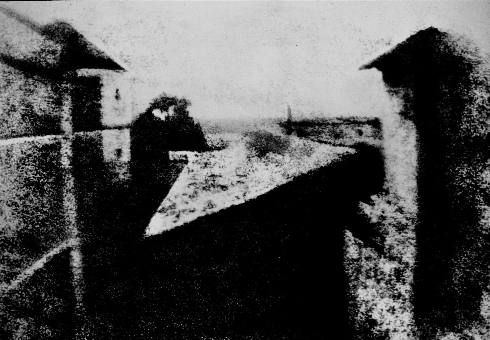
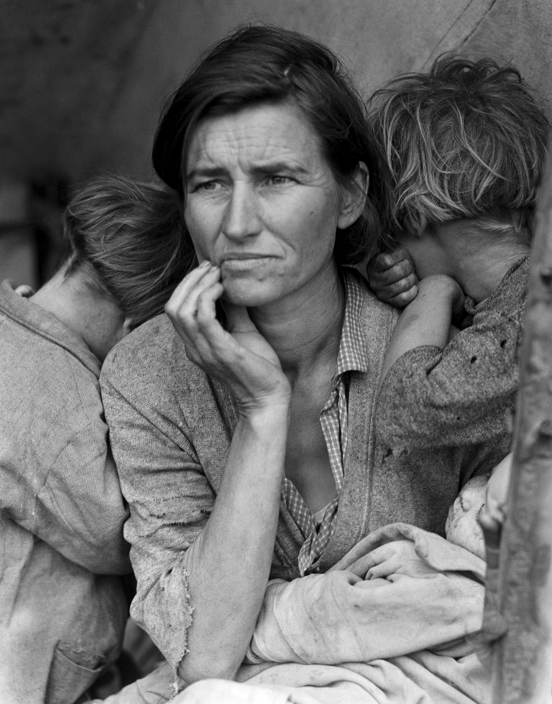
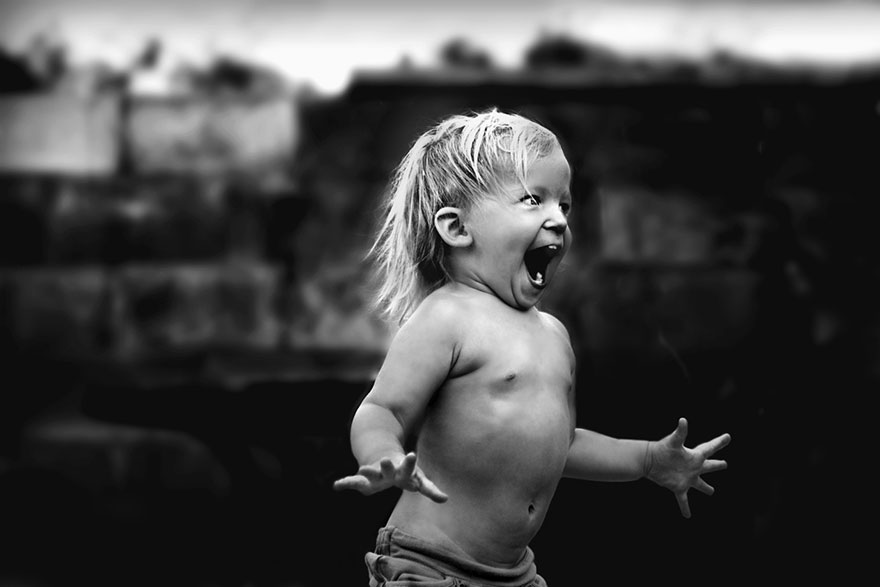
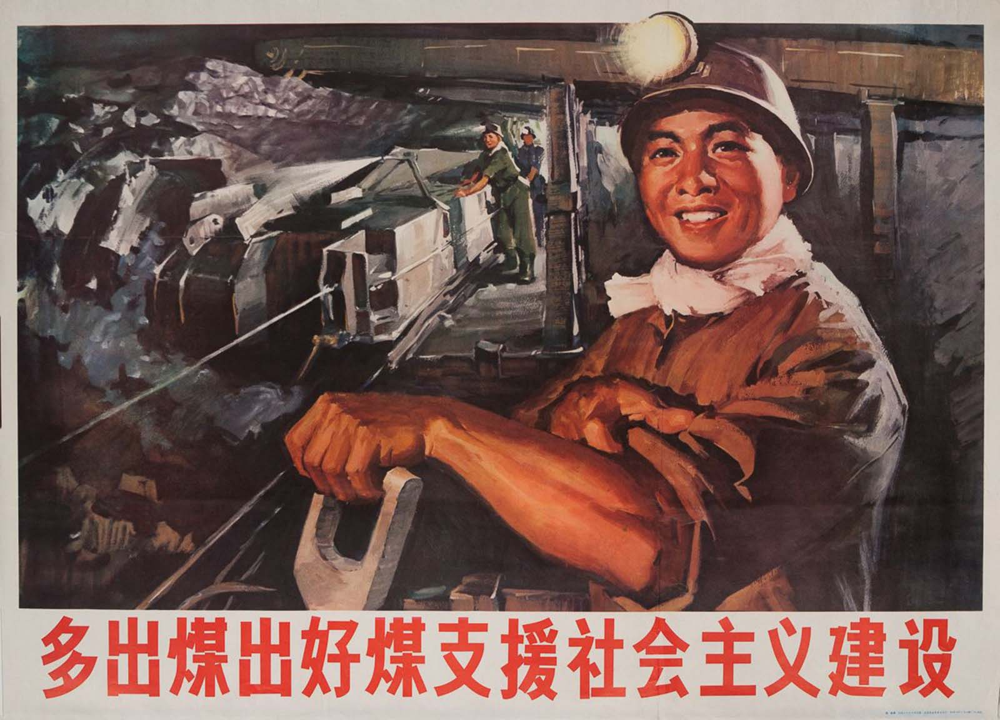
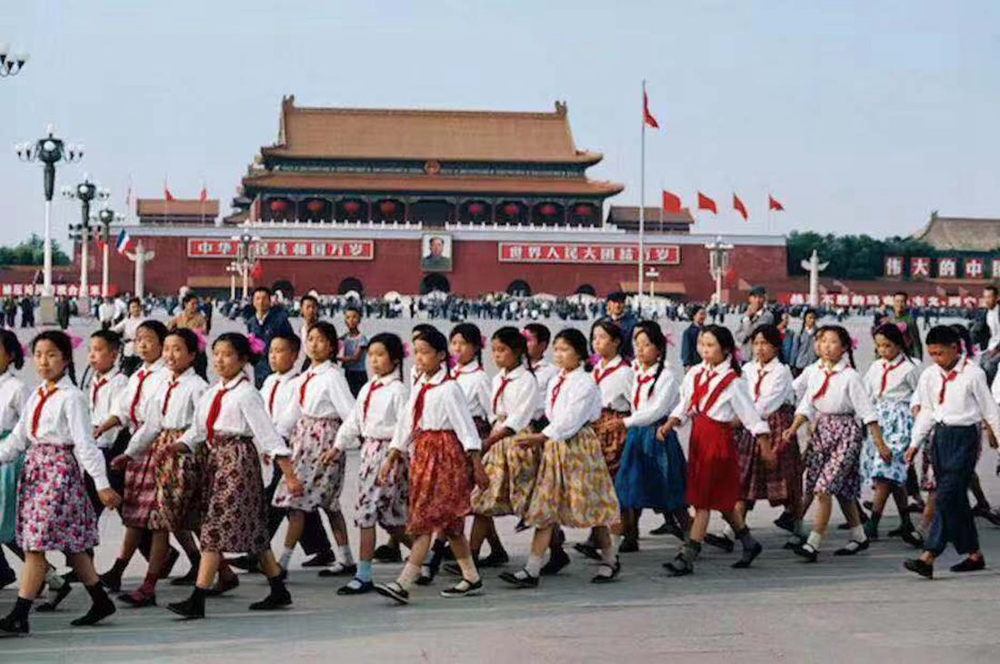

"Photograph collections can be used to make a substitute world, keyed to exalting or consoling or tantalizing images."

In the chapter Image World by Susan Sontag, Susan talks about the impacts and roles
photography plays in the world. As Sontag states "Photographs are a way of imprisoning reality", meaning that photography can be
used to preserve moments in ones life that are meaningful. However, in addition to this we are able to alter these moments
by changing contrasts, zooming in or out of specific locations on the image, and more.
- "Photographs do more than redefine the stuff of ordinary experience (people, things, events,
whatever we see—albeit differently, often inattentively—with natural vision) and add vast amounts
of material that we never see at all. Reality as such is redefined—as an item for exhibition, as
a record for scrutiny, as a target for surveillance."

- "Photographs are a way of imprisoning reality, understood as recalcitrant, inaccessible; of making it stand still. Or they enlarge a reality that is felt to be shrunk, hollowed out, perishable, remote."
Sontag also talks about how photography
can add the necessary detail in describing events and stories. "It is common for people to insist about their experience of a violent event.
This said some descriptions" seem insufficient in describing how real it was. Photography offers a glimpse into these stories and although you
may not be able to experience all the details, with the photos available you are able to fill in the blanks and use your imagination to invisualize
the event.

- "It is common now for people to insist about their experience of a violent event in which they were caught up—a plane crash,
a shoot-out, a terrorist bombing—that “it seemed like a movie.” This is said, other descriptions seeming insufficient, in order
to explain how real it was. While many people in non-industrialized countries still feel apprehensive when being photographed, divining
it to be some kind of trespass, an act of disrespect, a sublimated looting of the personality or the culture, people in industrialized countries
seek to have their photographs taken—feel that they are images, and are made real by photographs."
However, even though Photography offers a great view to events otherwise unseen Sontag does point out the potential risks and invasiveness
with such tools as well. It can be invasive of different cultures, and individuals privacy.

- "Photography for us is a double-edged instrument for producing
clichés (the French word that means both trite expression and
photographic negative) and for serving up “fresh” views. For the
Chinese authorities, there are only clichés—which they consider
not to be clichés but “correct” views."

Sontag describes the use of photography as being a form of communication that has the potential to be very
expressive, but also has the potential to oppress. She discusses how photographs can have many purposes,
from science to aesthetics, but how it can also be used to support a government agenda.
-
"Cameras arm vision in the service of power—of the state, of industry, of science. On the other hand, cameras make vision expressive in that mythical space known as private life.
In China, where no space is left over from politics and moralism for expressions of aesthetic sensibility, only some things are to be photographed and only in certain ways."